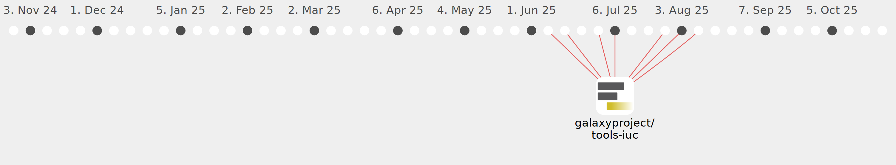

Galaxy Community Activities
elmbeech
elmbeech
https://github.com/elmbeech
Commits all-time:
35
Commits last year:
35

galaxyproject/tools-iuc
(35)
acb904f
4f687c2
97bfe35
a6ddb03
5936702
a0510be
eb843a1
5430ae7
b143357
34b16c5
f97c311
9b944f8
3f2e371
04c49be
d5baf12
00c8a00
518d7e1
65546d4
bdfd4a7
bcc82ad
35fe96c
cbeb8b5
3749444
49573be
3ce2391
163e32d
bc6833c
a1e5caa
1fbe41f
b5fdbd3
f74e07e
95a8617
9b1e0f4
da69b6d
382a615